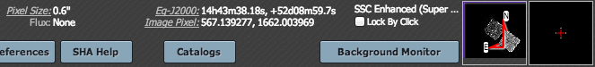
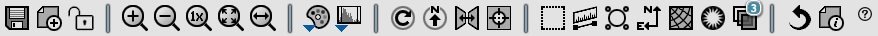
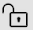
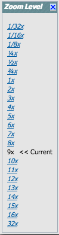
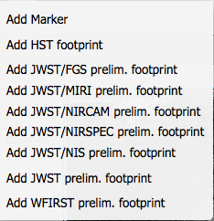
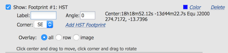
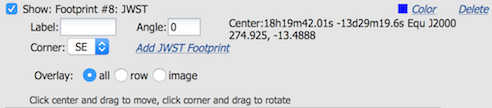
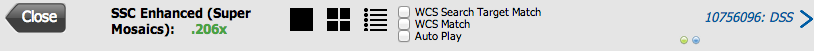

Visualizing data in the Spitzer Heritage Archive
Contents of page/chapter:
+Overview
+Basic FITS Image Viewer
+Visualization Tools -- Image Options
+Footprints -- overlaying markers
+Spectrum Viewer
+Breaking out of the pane (and going back)
+World Coordinate System (WCS) Alignment
Overview
Powerful visualization tools were important to the original Spitzer
observation planning and archive tools (Spot and Leopard), and the
descendents of these tools are included in the SHA. These tools can
be used to understand exactly what each observation did and in
deciding what data to download.
FITS images from Spitzer or other bands (or from your computer) can be
loaded into the viewer. If performing an SHA search, the footprint of
the observation can be overlaid on an image of your choice.
Individual data products can be viewed interactively and flux density
levels assessed.
The viewer within the SHA itself can be found in two places. Clicking
on "Read FITS File" on the top set of blue tabs allows you to load a
FITS file from disk or from a variety of online sources, resulting in
a visualization-only panel. Alternatively, and perhaps more
frequently encountered, once a search is completed, several of the
tabs in the Details pane on the right result in a window with an image
(or a spectrum) so that you can examine the data interactively. Please see details pane section for complete
information, but in summary, there is one tab entitled "Details" that
has text, and the rest have various representations of the data.
Basic FITS Image Viewer
All of the interactive image visualization tools work the same basic
way, and here we describe these basic options, in roughly the order
in which you might encounter them in the window.
- Interactive exploration of the image with the mouse.
- Move your mouse over any image that is loaded into the SHA.
Details about the image and, specifically, the pixel beneath your
mouse cursor, appear along the top of the window with a variety of
useful items. Some information is updated in real time (such as
coordinates); some information (such as flux densities) is updated
when you stop moving your mouse for a second or two. The image can be
interactively investigated in this fashion.

You can make it 'stick' on a
particular place on the image -- tick the "Lock by click" box and then
click on the image at your desired location.
The orientation of the image is given with a compass rose on the
right, next to a zoomed-in view of the image under your cursor. If you
can't see all of these two windows, enlarge your browser window
slightly.
- Finding out more about the displayed image.
- The top of the display (just under the tab headings) gives a title
of the image. This abbreviation may be a little cryptic. ISSA or IRIS
are both IRAS data. 2MASS comes up by default to be used for small
fields of view, and as such, the Spitzer fields of view may be off the
edge; this will be fixed in a later release.
Some of this information (like the title of the image) is also given
in the interactive exploration region described immediately above.
This region also includes additional information about the image (such
as the pixel scale and orientation).
There is a toolbox along the top of the IRSA Viewer window:

from which you can select a
variety of options, now described. Letting your mouse hover over any of
these icons will result in a "tool tip" that appears in order to
remind you what the icon does. This information is also dynamically
updated just to the right of the toolbox itself.
 Saving the image.
Saving the image.
- The diskette icon will allow you to save the current image as a
FITS or PNG or Regions file to your local disk. Note that you
control where the file is saved on your disk through your browser;
your browser may be configured to store all downloads in a particular
location on your disk.
Saved FITS images will not save the color stretches or overlays; it
will just save the underlying FITS image. Saved PNG files WILL
include any overlays or annotations you have placed on the image, but
will not include the underlying FITS image. Saved regions files will
not save the underlying image, but will just save the overlays as a
DS9 Regions file. See the DS9 website for more information on the syntax of
these DS9 region files.
Note that you can save the original or a cropped version of the
FITS file; see the select region icon below to crop, and then save the
FITS image.
Note also that if you overlay a catalog
consisting of tens of thousands of sources, to save bandwidth, what is
overlaid on your image at some locations may be a larger symbol
representative of several sources at that location; if you save a
regions file from the catalog overlay, then you will have fewer
sources in the regions file than you have in the full catalog.
 Selecting a new image
Selecting a new image
- Depending on what you're looking at, you may or may not have this
icon. If you are looking at a non-Spitzer image on top of which is
placed footprints if Spitzer observations, you have a choice of the
background image. By default, the SHA tries to pick a good background
image, but you may wish to try another wavelength or field of view. By
clicking on this icon, you bring up a pop-up window. The first part
of this window shows the central RA/Dec that you are about to request
(you can change this by clicking on "Modify Target" and all the usual
options appear). The next part of this window has a series of tabs:
IRAS (12, 25, 60, and 100 microns), 2MASS (J, H, and Ks bands, or
1.25, 1.65, and 2.17 microns), WISE (3.4, 4.6, 12, and 22 microns),
MSX (8.28, 12.13, 14.65, and 21.3 microns), DSS (the usual red/blue
plates and a variety of scan options), a FITS file from your local
disk, or a URL that you can enter so the browser can retrieve a FITS
file from the web. From this pop-up, you can also choose to create a
3-color image, loading a new FITS file separately for each color
plane. Note that this 3-color option only appears for background
images, not Spitzer data, unless you already have Spitzer data on your
disk that you can load into the visualization tool.
- Lock the image
- Depending on what you're looking at, you may or may not have this
icon. If you are looking at a non-Spitzer image on top of which is
placed footprints if Spitzer observations, you may wish to lock the
underlying image so that you can add additional annotations or
overlays to the image. Clicking on this icon brings up a pop-up from
which you can choose to lock the image (or load a new one).
 Zooming in or out.
Zooming in or out.
-
Clicking on these magnifying glass icons zooms in or out of the image.
The readout of how many times you are zoomed appears at the top of the
visualization window.
If you click zoom in or out rapidly, a pop-up window appears to allow
you to more rapidly select the zoom level you want. Select the desired
level, or click on the blue 'x' in the upper right to make the window
go away. Here is an example:

Note that there is a maximum (or minimum) allowed zoom level. A
notification will appear when you have reached the maximum (or
minimum) allowed zoom level for a given image. To enlarge things more
than that, please repeat your search to obtain new images with smaller
(or larger) spatial extent.
 Zooming to a 1-to-1 size.
Zooming to a 1-to-1 size.
- Clicking this icon will zoom the image such that one pixel in the
image is one pixel on your screen..
 Fit image to screen or fill
screen
Fit image to screen or fill
screen
-
These two icons are designed to maximize the available space in your
browser window. The first one automatically picks a zoom level such
that the image entirely fits within the available space. The second
one automatically picks a zoom level such that the image fills as much
of the available space as possible (e.g., it is zoomed such that short
axis of the window is filled with the image, whether that short axis
is left-right or up-down).
By default, the images that are returned are frequently but not always
centered on your search target. Clicking on these icons let you see
the whole image that is returned, whether or not it is centered on
your target.
 Changing the color table.
Changing the color table.
- This icon enables you to change the color table of the
displayed image. When you click the button, a pull-down menu appears
with a wide variety of color table choices. Select your new color
table from the options shown:

 Changing the color table
stretch.
Changing the color table
stretch.
- This icon enables you to change the color table stretch of the
displayed image. When you click the button, a pull-down menu appears
with a variety of choices. You can choose from a set of pre-selected
options:

If you pick the
first one, "color stretch", you can customize the stretch. A pop-up
window appears with a histogram of the values in the image, and you
can change the stretch type and range.

If you pick a color stretch from the
pre-defined options, the pop-up window reflects this change. (Ex: pick
'Linear stretch to 99%'. Go back to "color stretch". Note that it has
filled out the stretch type and ranges to reflect the current choice.
Then -- either with the pop-up window still up or not -- go back and
pick a different pre-defined stretch from the standard options. Note
that the values in the pop-up change to reflect this current
choice.)
 Rotating the image to any
angle
Rotating the image to any
angle
- This feature allows you to rotate the image to any angle of your
choice, in degrees. It will rotate the image counter-clockwise (to the
left) from the current view, not necessarily the original image. For
example, entering "45" in the rotation pop-up and hitting "rotate"
will rotate the image 45 degrees counter-clockwise relative to its
original orientation. Then selecting the icon again, and entering
"180" in the pop-up (followed by hitting "rotate") will rotate the
image an additional 180 degrees counter-clockwise. To exit the pop-up
without making further changes, hit the blue 'x' in the upper right of
the pop-up.
 Rotating the image so that North is
up.
Rotating the image so that North is
up.
- Images used as background images (for. e.g., the AOR Footprint)
are commonly already oriented such that North is up, or close to it.
However, actual data frames from the pipelines or contributed products
may not have North up. Clicking this icon will orient the
image so that North is up.
 Flipping the image on the y-axis.
Flipping the image on the y-axis.
- Clicking on this icon flips the image on the y-axis.
 Re-center the image.
Re-center the image.
- Clicking this icon will re-center the image on the center of the
last query, or on the center of the image.
 Selecting a region.
Selecting a region.
- When you click this icon, at first, nothing seems to happen.
(There is a notice with brief instructions that appears on the lower
left of your browser window.) You can now click and drag in the
image, selecting a box on the image. This box can be resized by
grabbing and dragging the corners of the box. You can make a new box
right away by holding down the shift key and clicking and dragging to
select a new box. When you have selected a region of the image,
additional icons appear above the image:
 These icons will allow you to (from left
to right) crop the image to the selected region, obtain statistics on
the region, select the catalog sources overlaid on the image within
the region, or filter the overlaid catalog down to the enclosed
sources. (The last two options will only appear if you have a catalog
overlaid.) You can save the cropped FITS image via the save icon
(described above). The statistics option results in a pop-up that
looks something like this:
These icons will allow you to (from left
to right) crop the image to the selected region, obtain statistics on
the region, select the catalog sources overlaid on the image within
the region, or filter the overlaid catalog down to the enclosed
sources. (The last two options will only appear if you have a catalog
overlaid.) You can save the cropped FITS image via the save icon
(described above). The statistics option results in a pop-up that
looks something like this:

Selecting sources highlights them in the catalog list. When you
impose a filter, the filters icon changes above the catalog to
indicate that there is a filter applied (in this case just one filter:
 ). To clear the filters, click on
the cancel filters icon (which also appears after you impose filters):
). To clear the filters, click on
the cancel filters icon (which also appears after you impose filters):
 .
.
 Measuring a distance.
Measuring a distance.
- When you click this icon, at first, nothing seems to happen.
However, you can now click and drag to draw a line on the image, and
the length of the line is displayed (in the middle of the line). The
units for the measured distance (and the color of the overlay) can be
changed from the "layers" icon (described below). You can
calculate the difference in RA and Dec separately via the layers icon
as well; find the layer associated with the distance measurement and
tick the "offset calculation" box. When it displays the offset
calculation, it will give you the angle in degrees in one corner, and
the length of the line segment in the RA and Dec directions, in the
units you have specified.
 Put a marker on the image.
Put a marker on the image.
- When you click this icon, a pull-down menu appears with several
possible options:

The first
overlay choice (simply called 'marker') is a red circle. Initially, it
appears in the center of the images, and is meant to be moved to
wherever you first click in the image. It looks like this:  . The small circles in the four corners are
"handles" -- you can grab the handles to resize the circle. You can
also drag it to any location in the image. You can change the color
of the marker (and add a label to it) via the "layers" icon (described
below). You can also remove this layer via the layers icon. There are
several additional options in the pulldown, enough that they have
their own section below.
. The small circles in the four corners are
"handles" -- you can grab the handles to resize the circle. You can
also drag it to any location in the image. You can change the color
of the marker (and add a label to it) via the "layers" icon (described
below). You can also remove this layer via the layers icon. There are
several additional options in the pulldown, enough that they have
their own section below.
 Show the directions of North and East
Show the directions of North and East
- When you click this icon, arrows appear on the image showing
which direction is North and which is East.
 Add a coordinate grid.
Add a coordinate grid.
- Click on this icon to overlay a coordinate grid on the image.
Click it again to remove it. Customize the units of the grid (to,
e.g., Galactic coordinates) via the "layers" icon (described
below).
 Read in a DS9 Regions file
Read in a DS9 Regions file
- When you click this icon, you get a pop-up window from which you
can read in a DS9 regions file from your local disk. See the DS9 website for more information on the syntax of
these DS9 region files. The supported regions are text, circle, box,
polygon, line, and annulus. To make this window go away without doing
anything, click on the blue 'x' in the upper right of the pop-up.
 Viewing/changing the layers on the
image.
Viewing/changing the layers on the
image.
- If you've been following along by trying these various options,
you now have an image with a lot of annotations on it. The number that
appears in blue over the layers icon tells you at any given time how
many layers you have on the currently selected image. If you click
this icon, you will get a pop-up window with a list of all the layers
you have on top of the image. From the pop-up, you can turn layers off
and on, at minimum, but you can often also change exactly what is
displayed and what colors get used for it. To add new things, though,
you need to go to other options within the toolbar. Here is an example
of a well-populated layers pop-up.

To change colors of a layer, click on
the 'colors' link to be taken to a new pop-up from which you can
select a new color. To delete a layer, click on 'delete'. Some layers
appear do not have that option; to remove that layer, click on the
corresponding icon from which you added that feature. To make this
pop-up window go away, click on the blue 'x' in the upper right of the
pop-up.
 Restoring everything to the
defaults
Restoring everything to the
defaults
- If you've played around a lot with the image, you may want to undo
everything you've done. Click this button to restore everything to
their original default values. Some layers may persist; remove them
via the layers icon described above.
 Viewing the FITS header.
Viewing the FITS header.
- This icon will display a pop-up window with the FITS header of the
background image. If you click on the columns of the FITS header in
the pop-up, it will sort the keywords alphabetically by that column.
This is useful for finding individual keywords in particularly densely
populated FITS headers. Click the header again to sort in
reverse-alphabetical order, and a third time to return to the default
order. Here is an example of a sorted FITS header. Note that the first
column is the original order of the keywords. To make it go away,
click on the blue 'x' in the upper right of the pop-up.

 Getting help.
Getting help.
- Clicking on this icon takes you to this help page.
Also see the information on
retrieving and using catalogs, because you can overlay catalogs on
your images.
Footprints
The marker icon () has a pull-down menu with
several possible options:
We
now describe these options here.
For each of these choices, the markers appear initially in the center
of the loaded images. The first mouse click you make in any of the
images will move the marker to that location.
Each of these marker choices, when overlaid and/or selected as
'active', has a large circle surrounded by 4 small circles located at
the edge of the large circle. These so-called "handles" allow you to
resize and/or rotate the marker, depending on the nature of the
marker. These handles only appear when the marker is selected as
active, and they are in the same color as the marker itself.
From this marker icon pull-down, by default, it comes up with each
option as "show". When you select that option, the marker appears in
the layers pop-up (described above), from which you can hide/show the
marker, or change its color. Note that after you add a marker, the
pulldown menu here changes for that marker menu option to be "hide
all" in front of that marker menu option. You can add multiple copies
of the same marker using the layers pop-up (described generally
above). You can also add a label to the marker from the layers
pop-up.
The first overlay choice (simply
called 'marker') is a red circle.
The remaining markers are all footprints from other space-based
telescopes: HST, JWST, and Nancy Grace Roman Space Telescope (WFIRST).
These footprints are derived from information provided via MAST (see
http://gsss.stsci.edu/webservices/footprints/help.html  .)
For JWST and Roman in particular, they are pre-launch values.
.)
For JWST and Roman in particular, they are pre-launch values.
 HST focal plane footprint.
Consult the HST
documentation for specifics on which apertures are which. The
footprint can be moved or rotated. Click and drag the center of the
footprint. A circle appears with four small circles ("handles") around
it. Grab and drag the small circles to rotate it, or drag the big
circle to move it. Note that if you overlay the
footprint on a very small image, nothing will appear to have happened.
You need at least a 45 arcmin image to comfortably see the footprint.
Change the color, delete, or add more copies of the HST footprint from
the layers pop-up:
HST focal plane footprint.
Consult the HST
documentation for specifics on which apertures are which. The
footprint can be moved or rotated. Click and drag the center of the
footprint. A circle appears with four small circles ("handles") around
it. Grab and drag the small circles to rotate it, or drag the big
circle to move it. Note that if you overlay the
footprint on a very small image, nothing will appear to have happened.
You need at least a 45 arcmin image to comfortably see the footprint.
Change the color, delete, or add more copies of the HST footprint from
the layers pop-up:

JWST focal plane footprints.
| JWST Footprint | Description |
|---|
 | JWST FGS Preliminary footprint |
 | JWST MIRI Preliminary footprint |
 | JWST NIRCAM Preliminary footprint |
 | JWST NIRSPEC Preliminary footprint |
 | JWST NIS Preliminary footprint |
 | JWST entire Preliminary footprint (cross is boresight) |
Note that if you overlay the footprint on a very
small image, nothing will appear to have happened. You need at least a
30 arcmin image to comfortably see the footprints, especially the
entire JWST focal plane. Please consult the JWST documentation for details
about the footprints. In all cases, if the footprint is 'active', a
circle near the middle of the footprint will appear with four small
circles ("handles") around it. Grab and drag the small circles to
rotate it, or drag the big circle to move it. Change the color,
delete, or add more copies of the footprints from the layers pop-up,
one example of which is given here:

 Nancy Grace Roman Space Telescope
(WFIRST) focal plane footprint. As above, the footprint can
be moved or rotated. Click and drag the boresight (the cross hairs),
which appears by default to the upper right of the array of squares.
A circle appears, centered on the boresight, with four small circles
("handles") around it. Grab and drag the small circles to rotate it,
or drag the big circle to move it. Note that if you
overlay the footprint on a very small image, nothing will appear to
have happened. You need at least a 60 arcmin image to comfortably see
the footprint, and even then you will probably have to click and drag
to see the entire footprint. Consult the Roman documentation for
specifics on the apertures. Change the color, delete, or add more
copies of the Roman footprint from the layers pop-up:
Nancy Grace Roman Space Telescope
(WFIRST) focal plane footprint. As above, the footprint can
be moved or rotated. Click and drag the boresight (the cross hairs),
which appears by default to the upper right of the array of squares.
A circle appears, centered on the boresight, with four small circles
("handles") around it. Grab and drag the small circles to rotate it,
or drag the big circle to move it. Note that if you
overlay the footprint on a very small image, nothing will appear to
have happened. You need at least a 60 arcmin image to comfortably see
the footprint, and even then you will probably have to click and drag
to see the entire footprint. Consult the Roman documentation for
specifics on the apertures. Change the color, delete, or add more
copies of the Roman footprint from the layers pop-up:

Spectrum Viewer
Some of the data products associated with spectroscopy are images
(e.g., the original images that were read out from the instrument),
but reduced spectra can be viewed from any results tab (except for the
AOR tab). These files appear as a "Table" in the "File Type" column of
the results table. Select one of them in the results pane, and then
look at the "Data" tab from the details pane, and you will be able to
interactively explore the spectrum. Move your mouse along the
spectrum, and a popup display shows you the corresponding wavelengths
and flux densities. If you are getting no pop-up display, click once
in the window to be sure your computer knows you are there.
(This visualization tool can be used with any x-y plot, but in several
SHA cases, it's used for viewing a spectrum.)
- Finding out more about the displayed spectrum.
- The top of the display (just under the tab headings) gives an
indication of the observation and what is plotted.
 Expanding the spectrum.
Expanding the spectrum.
- Clicking on this icon will enlarge the visualization
window into a window that takes up the whole browser window. This
also enables you to look at more than one visualization window at a
time.
- More about the expanded view
- For the IRS enhanced products, some options are only available
in the expanded view. In the expended view, you can turn on/off
plotting of various orders and synthetic photometry points.
There is more on the expanded view in general below.
- Zooming in or out.
- Unlike an image zoom, here you have something called "Rubber band
zoom." Use your mouse to denote a region by clicking-and-dragging
from the upper left to the lower right of the region on which you'd
like to zoom. This region is then expanded in the viewer. To return
to the original view, there is a link at the bottom of the viewer that
says "Zoom out to original chart" which returns you to the default
view.
- "Chart Options"
- For the spectrum visualizations, a "chart options" link is
available in the lower left. This brings up a pop-up window entitled
"XY Plot Options" with various configurable options to further
manipulate your plot.
In the pop-up, you have these options:
- Plot Error -- add the errors to the plot. They appear as a light
grey 'envelope' around the spectrum.
- Plot Synthetic Photometry -- checked by default, this overplots
the synthetic photometry that is part of the IRS enhanced product. If
you are not viewing an IRS enhanced product spectrum, this option does
not appear.
- Plot Style -- change how data are presented on the plot.
The options are "Connected Points", "Unconnected
Points", and "Line". Connected points shows the individual points and
a line connecting them. Unconnected points shows just the individual
points. Line shows just the line connecting the points.
- X min/X max and Y min/Y Max -- manually change the range of the
plot. You can also 'rubber band zoom', as per the above. Please note
that unlike zoom, changing the range drops out-of-bound points, and
some points that were not adjacent before might become connected as
adjacent.
- X Column and Y Column -- change what is being plotted. Click on
the blue circled "i" to get a list of the choices. Note that if you
change what is plotted on the Y axis, the ability to overplot errors
and synthetic photometry goes away.
"Restore Default" undoes any changes you made, and "Apply" implements
any changes you made.
These options are preserved through the current search. It will be
reset to the defaults in the next search, or when the search is
redone.
If the plot ever looks strange, go back and make sure that you have
clicked 'Restore Default' in this pop-up. This always applies to the
current plot.
- "Download Data Table"
- For all spectrum visualizations, a "download data table" link is
available in the lower right. This will allow you to save the source
data table which is being plotted.
- Saving a particular view
- The best way to save a particular view of a particular
spectrum/zoom/annotation/etc. is to do a screen snapshot. The
specifics for this vary according to your platform and OS version. On
a Mac, this is accomplished via holding down command, then shift, then
4, then let go and your mouse cursor changes. Hit the space bar to
select the window over which your mouse is hovering. Your mouse cursor
changes again, and hit the mouse button. A snapshot is then saved to
your Desktop, tagged with the date and time.
Breaking out of the pane (and going back)
By default, the search results are broken up into panes. For some
purposes, it is useful to view either the table as large as possible,
or the images as large as possible. If you let your mouse hover over
just about any tab in any pane, this icon appears in the upper right of the pane.
Clicking on it will expand the pane into a larger window, as big as
possible given your browser size. If you expand an image, from this
view, you now have some additional options that appear near the top of
the new window.

The large "Close" arrow at the left enables you to return back to the
pane view. This arrow is always available in these expanded views.
Next, the currently displayed band (sometimes using abbreviations) and
magnification factor is shown. Zoom in or out using the visualization
toolbox described above.
Then, there is a cluster of icons  that
portray (in icon form) the different views you can have of the images
you have loaded. (The current view has a light blue square around it.)
The first icon (the big square) denotes "show one image at a time."
The second icon (the cluster of four squares) denotes "show smaller
images of all the images I have loaded, but still take up the whole
browser window with the set" (as opposed to going back to the
individual window panes). In the SHA, most of the time, you only have
one image loaded. But, depending on what you have been doing in your
session to this point, you may have more than one image loaded, plus a
plot from the catalog. Perhaps you wish to see, e.g., just two of the
images tiled? Click on the last, "list" icon in this cluster to bring
up a pop-up window:
that
portray (in icon form) the different views you can have of the images
you have loaded. (The current view has a light blue square around it.)
The first icon (the big square) denotes "show one image at a time."
The second icon (the cluster of four squares) denotes "show smaller
images of all the images I have loaded, but still take up the whole
browser window with the set" (as opposed to going back to the
individual window panes). In the SHA, most of the time, you only have
one image loaded. But, depending on what you have been doing in your
session to this point, you may have more than one image loaded, plus a
plot from the catalog. Perhaps you wish to see, e.g., just two of the
images tiled? Click on the last, "list" icon in this cluster to bring
up a pop-up window:

This popup
window lists all of the images you have loaded, and if you uncheck the
corresponding box, that image, while it is still loaded, will not be
shown if you, say, scroll through the images, or look at them in tiled
mode.
The next portion of the window has some WCS (world coordinate
system)-related options that will be discussed below.
Finally, on the right hand side, the arrows, labels, and green/blue
dots (which only appear when you are viewing one image at a time)
allow you to navigate through your set of images. The green dot
inamongst the blue dots indicates where you are in the sequence of
images, and the arrows and labels indicate which image is before or
after the currently viewed image. Click on the arrows or the dots to
move around in the sequence.
World Coordinate System (WCS) Alignment
In the expanded view ("broken out of the pane"), you have up to three
checkboxes that may appear as viable options: "WCS Search Target
Match", "WCS Match", and "Auto Play." ( )
However, depending on what you have loaded, these WCS options may not
make sense or may not seem to have an effect (e.g., may not seem to
affect the displayed images in any sensible way). They are:
)
However, depending on what you have loaded, these WCS options may not
make sense or may not seem to have an effect (e.g., may not seem to
affect the displayed images in any sensible way). They are:
- WCS Search Target Match
- This box is available whether you are looking in single frame or
tiled frame view. Clicking on this box will align all of the displayed
images to be centered on the target on which you searched (inertial or
moving). Your search target is indicated by the blue circle. Clicking
this option also aligns north up, and zooms such that the images fit
in the available window, and aligns the images so that each image has
the same angular scale. In essence, this is a one-click way of doing
the following: locking all the images together, clicking on the
"rotate North up" icon, clicking on the "zoom to fit" icon, and
clicking on the "center on search target." This is particularly
useful if you are looking for changes between multiple images of the
same target, or following a moving target as it moves across multiple
images.
- WCS Match
- This box is available whether you are looking in single frame or
tiled frame view. The effects of clicking this box is similar to the
prior "WCS Search Target Match" option, except that it aligns each
image to the orientation, zoom, etc., of the image you have selected.
(In tiled view, an image is selected by clicking on that image, and,
once it is selected, the tile is outlined in orange. In single-frame
view, the image you are looking at is the selected image.)
- Auto Play
- This box is only available in single frame view. This option
blinks through all of the images you have loaded (and
aligned). You may find that you have 'extra' images loaded, beyond
what you wanted to blink. To remove those from the blink sequence,
stop the blinking by unchecking the "Auto Play" box, click on the list
icon immediately to the left of the checkboxes, which brings up a
"Choose which" pop-up. Uncheck the images you don't want to show,
click on "ok", and then go back and check the "Auto Play" box to blink
the remaining images. (See above for more
details on this process.) Once it loads and blinks through all the
images at least once, it holds the images on the screen for 1 second
before showing the next image.
Note that the WCS options are "sticky", which means that if you click
one, and then unclick it a few seconds later, it doesn't automatically
"undo" the changes it made; to "undo" it, you either have to redo your
search entirely, or click the "return to defaults" icon in the toolbox.
To remove an image entirely, click on the small blue 'x' in the upper
right of the image in the tiled view, or on the small blue 'x' in the
corner of the image (or catalog) tab in the window pane view.